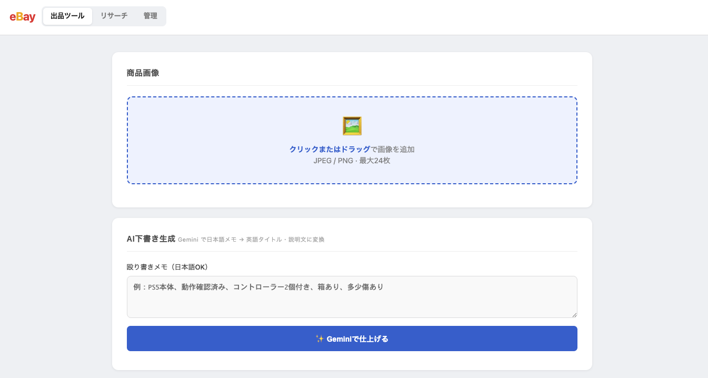
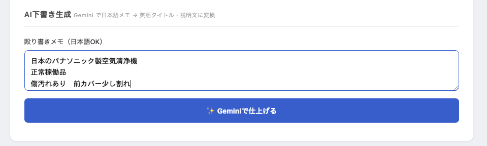
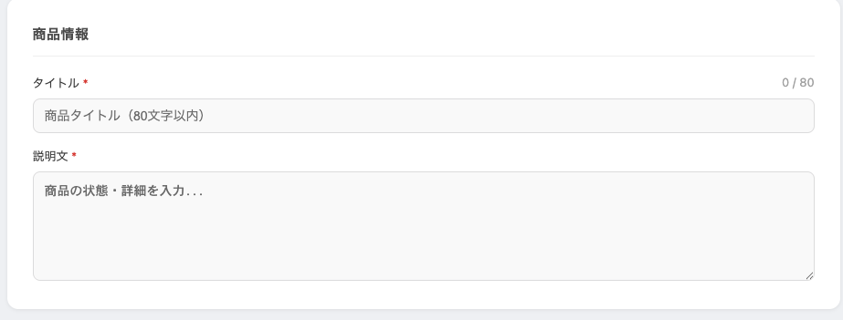
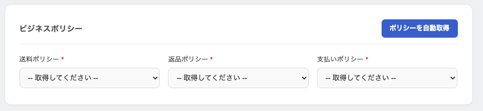
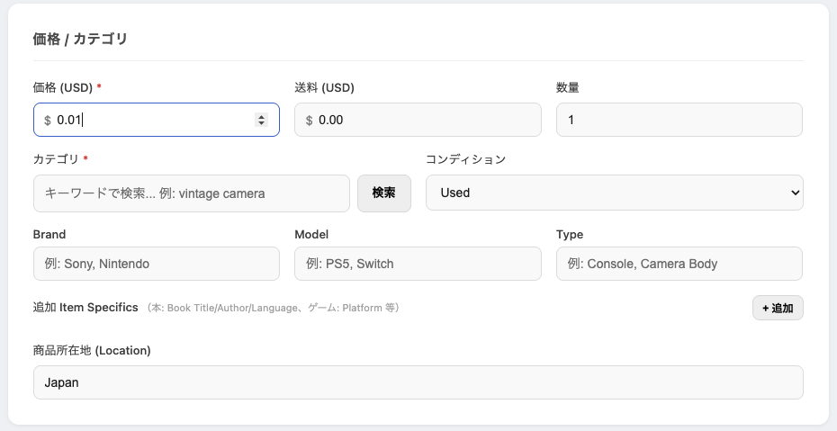
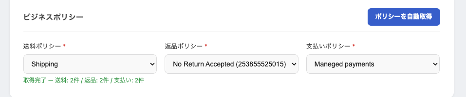

背景：「出品作業に人手と時間がかかりすぎる」というご相談
最初にご相談をいただいたきっかけは、ネットショップ運営者さまから「eBayへの出品作業が、思っていたよりも大きな負担になっている」というお話でした。 国内のショッピングモールへの出品はある程度仕組み化できていたものの、海外向けのeBay出品については、商品ごとの作業量が多く、担当できるスタッフも限られている状況でした。
ヒアリングを進めていくなかで、いくつかのボトルネックが見えてきました。 ログインからカテゴリ選択、商品説明、英訳、価格設定、ポリシー設定までが画面ごとに分かれており、ひとつの商品を出品するためにいくつもの画面を行き来する必要があったことが、その大きな要因でした。
従来の作業フローで起きていたこと
実際に作業を観察させていただいたところ、慣れているスタッフの方でも、1商品あたり概ね8〜10分の時間がかかっていました。 作業の中身を分解してみると、おおよそ次のような流れでした。
| 工程 | 主な作業内容 | 目安時間 |
|---|---|---|
| 1. ログイン・画面遷移 | eBayへのログインと、出品ページ・設定ページの行き来 | 1〜2分 |
| 2. 商品情報の入力 | タイトル、カテゴリ、商品状態などの手入力 | 2〜3分 |
| 3. 商品説明・翻訳 | 商品説明文の作成と、別ツールでの英訳・推敲 | 3〜4分 |
| 4. ポリシー・配送設定 | 支払い・配送・返品ポリシーの選択や設定 | 1〜2分 |
| 5. 価格設定・最終確認 | 価格入力、最終確認、出品ボタン | 1分前後 |
個々の工程はそれほど難しい作業ではありません。 ただ、一連の流れの中で何度もページを遷移し、別タブで翻訳ツールを開き、ポリシー設定の画面を開き直し、といった「行き来」が積み重なっていたことで、作業全体の時間が膨らんでいました。
また、これらの作業は属人化しやすく、新しく参加したスタッフが同じスピードで出品できるようになるまでには、それなりの習熟期間が必要となっていました。
解決のアプローチ：1画面で完結するAIツールへの再構築
ご相談を踏まえて、私たちは「eBay出品に必要な工程を1画面に集約し、繰り返し発生する作業はAIで自動化する」という方針で、専用のWebアプリケーションを設計・開発しました。
ポイントは、業務そのものを大きく変えることではなく、これまで人が手で行っていた繰り返し作業を、ツール側に移していくという考え方です。 担当者の方にとっては、操作の流れがシンプルになるだけで、出品判断や価格設定など本来注力すべき部分はそのまま残るように構成しています。
機能01：商品画像とメモを、まとめて投入できる
最初の入り口は、商品画像と簡単なメモのアップロードです。 画像は複数まとめてドラッグ＆ドロップでき、商品の特徴や状態は箇条書き程度の「殴り書き」で構いません。きれいな文章に整えるのは、後段のAIが担当します。

機能02：商品説明文と英訳を、AIが同時に生成
投入された情報をもとに、AIが日本語の商品説明文と英文タイトルを同時に生成します。 翻訳ツールを別タブで開いて手作業で英訳していた工程が省略され、説明文の作成から英訳までが、ひとつの流れの中で完了するようになっています。

機能03：必要な項目へ、自動で反映
生成された商品説明文や英訳は、対応するフォームの項目へ自動的に反映されます。 コピー＆ペーストの繰り返しが不要になり、貼り付け先を間違えてしまうといったヒューマンエラーも起こりにくくなります。

機能04：ポリシー設定は、ボタンひとつで取得
eBayでは、出品の際に支払い・配送・返品ポリシーを選択する必要があります。 従来は管理画面の中からその都度ポリシーを探しに行く運用でしたが、本ツールではAPI経由で登録済みのポリシーを取得し、ボタン操作だけで反映できるようにしました。

機能05：価格を入力したら、出品までシームレス
最後に価格を入力し、内容を確認すれば、そのままeBayへ出品される流れになっています。 確認画面と入力画面を何度も往復するような操作はなくなり、必要な確認は1つのページの中で完結します。

機能06：操作はシンプル、初めての方でも扱いやすく
画面のレイアウトと操作フローはできるだけシンプルにまとめています。 eBay出品の経験がないスタッフの方でも大きな迷いなく扱えるよう、「次に押すボタン」が常に明確になるよう配慮しました。

導入後の変化
運用を開始してから、現場の作業の様子は次のように変わってきています。
- 作業時間の短縮：1商品あたり8〜10分かかっていた作業が、概ね1〜2分程度で完了するようになりました。
- 属人化の解消：eBayの操作に慣れていないスタッフの方でも、初日から出品作業に参加できるようになりました。
- ミスの抑制：コピー＆ペーストや、ポリシー選択の取り違えなど、細かなヒューマンエラーが起こりにくくなりました。
- 運営側の余裕：これまで出品作業に充てていた時間を、商品企画や顧客対応など、他の業務に振り向けられるようになりました。
数値そのものよりも、「同じ時間でこれまでより多くの商品を扱えるようになった」「スタッフを増やさずに販路を広げられる見通しが立った」といった、運営面での余裕が生まれた点を喜んでいただいています。
このプロジェクトで意識したこと
AIツールを導入する際、私たちが意識しているのは、いきなり大きなシステムを作るのではなく、現場で繰り返し起きている作業を起点に、本当に必要な機能だけを丁寧に組み上げていくことです。
今回のeBay自動出品ツールも、最初から完成形を目指したのではなく、ヒアリングと現場での観察を重ねながら、優先度の高い工程から順に自動化を進めていきました。 その結果として、機能の盛り込みすぎを避けながら、業務にしっかり馴染むツールに仕上げることができたと考えています。
同じような課題をお持ちの方へ
「特定の業務だけ、いつも時間がかかっている」「特定のスタッフに作業が集中している」「画面の行き来が多くて、新人が育ちにくい」—— こうした状況は、eBayの出品作業に限らず、多くの業務で起こりがちです。
ユースタイルでは、業務内容のヒアリングからツール設計、実装、運用後の改善までを一貫して支援しています。 既存システムを丸ごと置き換えるのではなく、現場の作業の中に「ちょうどよく収まるAIの仕組み」を組み込むかたちで、無理のない導入をご提案します。
現在の業務フローを整理する段階からのご相談も歓迎しております。お気軽にお問い合わせください。
同じような業務改善のご相談から、まずはお気軽にどうぞ。
無料相談の段階で、御社に合うかどうかも含めて一緒に検討させていただきます。